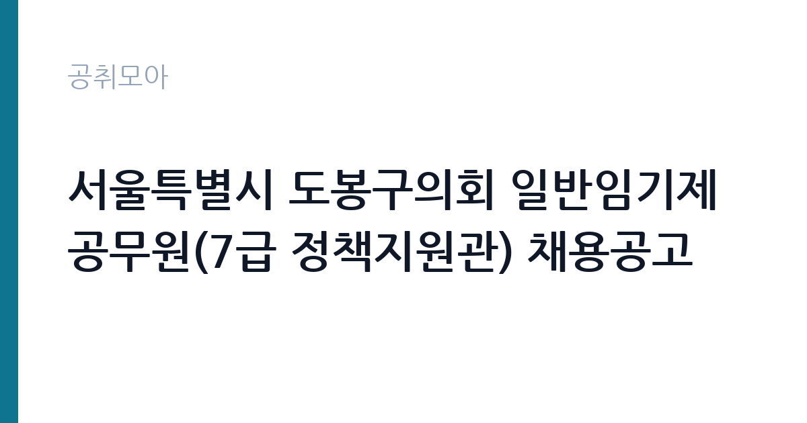

[지자체] 서울특별시 도봉구의회 일반임기제공무원(7급 정책지원관) 채용공고
서울특별시 도봉구 · 서울 · 마감 2026-10-14 (D-13) · 출처 나라일터

한눈에 보는 모집 조건
| 기관 | 서울특별시 도봉구 |
|---|---|
| 공고명 | 서울특별시 도봉구의회 일반임기제공무원(7급 정책지원관) 채용공고 |
| 고용형태 | 임기제 |
| 근무지 | 서울 |
| 게시일 | 2026-10-02 |
| 마감일 | 2026-10-14 (D-13) |
지원자격, 이렇게 읽으세요
- 임기제지방행정주사보 1명
- 접수 ~2026-10-14 마감
- 세부 조건은 원문 공고문 확인
선발 직급은 일반임기제 7급 상당(지방행정주사보 상당)이며 모집 분야는 정책지원관입니다. 7급 상당 임기제는 관련 분야 학위나 일정 기간 이상의 실무 경력을 요구하는 경우가 많으므로, 세부 자격요건은 원문 공고문에서 확인하셔야 합니다. 행정학과 정책학, 법학 등 관련 전공이나 지방행정, 연구기관, 시민단체 활동 경력이 있으면 유리합니다. 임기제는 임기가 정해진 신분이므로 기간과 연장 조건을 공고문에서 확인하고 지원하시기 바랍니다.
이 공고의 포인트
이 공고의 포인트는 세 가지입니다. 첫째, 7급 상당의 대우입니다. 7급 상당 정책지원관은 초봉이 4천만원대 중반 수준으로 알려져 있어 경력직으로 매력적인 조건입니다. 둘째, 서울 의회 근무입니다. 수도권 의회는 지원자가 몰리는 곳이라 경쟁이 있지만, 의정 실무를 가까이에서 배우는 기회가 됩니다. 셋째, 정책 전문성을 쌓는 자리입니다. 조례와 예산, 감사 업무를 두루 다루므로 지방행정 전문가로 성장하려는 분께 경력의 발판이 됩니다.
전형은 어떻게 진행되나
전형은 서류 심사와 면접으로 진행될 것으로 보이며, 정책지원관 채용은 서류에서 정책 관련 경력을 꼼꼼히 보는 편입니다. 정확한 전형 단계와 제출 서류는 원문 공고문에서 확인하셔야 합니다. 응시 방법은 직접 방문과 등기우편 접수이며, 접수 기간이 사흘뿐이라 우편 접수 시 배송 기간을 감안해야 합니다. 자기소개서와 직무수행계획서를 요구하는 경우가 많으니, 정책 분석 경험과 의회 업무 이해도를 중심으로 미리 작성해 두셨습니다.
원문에서 확인한 전형 방식
○ 모집분야 : 정책지원관 ○ 선발직급 : 일반임기제 7급 ○ 자격요건 : 공고문 참조 ○ 접수기간 : 2026년10월12일 ~ 2026년10월14일 ○ 응시방법 : 직접 방문 및 등기우편 접수 ○ 문의처 : 02-2091-4703
이런 분께 추천해요
- 지방행정이나 정책연구, 조례 관련 실무 경력이 있으신 분
- 행정학과 정치학, 법학 등 관련 전공을 공부하신 분
- 의회와 지방자치 분야에서 경력을 쌓고 싶으신 분
지원 전 체크리스트
- 7급 상당 자격요건(학위와 경력 기준)을 원문에서 확인하셨습니다
- 직무수행계획서 등 제출 서류 목록을 확인하셨습니다
- 임기와 연장 조건, 보수 수준을 공고문에서 확인하셨습니다
- 접수 기간 10월 12일부터 10월 14일을 놓치지 않도록 준비하셨습니다
모집 일정과 제출 타이밍
접수 기간은 2026년 10월 12일부터 10월 14일까지 사흘뿐입니다. 추석 연휴 직후라 서류 발급 기관 운영 여부를 미리 확인할 필요가 있습니다. 등기우편 접수는 배송 기간을 감안해 10월 12일 이전에 발송하시는 것이 안전합니다. 방문 접수를 계획하신다면 도봉구의회 의회사무국 위치와 접수 시간을 확인하고, 마감일 혼잡을 피해 미리 다녀오시기 바랍니다.
직무 이해하기: 지자체
정책지원관은 지방자치법 제41조에 따른 지방의원의 정책지원 전문인력으로, 의원 정수의 2분의 1 범위에서 둘 수 있습니다. 실제 업무는 조례 제정과 개정 검토, 예산안과 결산 분석, 행정사무감사 자료 작성, 구정 현안 조사와 정책 대안 제시입니다. 집행부 공무원과 달리 의회 소속으로 의원의 의정활동을 직접 돕는 자리라 정치적 중립성과 자료 분석력이 함께 요구됩니다. 회기 중에는 감사 자료와 5분 발언 자료 준비 등으로 업무가 집중됩니다.
자기소개서 작성 팁
자기소개서와 직무수행계획서에서는 정책 분석 경험을 구체적으로 쓰셨습니다. 조례안을 검토하거나 예산서를 분석한 경험, 행정사무감사나 평가 업무 참여 경험을 숫자와 함께 적으시면 좋습니다. 도봉구 현안에 대한 이해를 보여주는 것도 강점이 됩니다. 인구 구조와 주거 환경, 교육과 복지 같은 구정 이슈 중 관심 분야를 정해 어떤 자료로 의원을 지원할지 계획을 제시하셨습니다. 특정 정당이나 의원에 대한 언급은 피하고 전문성과 중립성을 강조하셨습니다.
면접 준비 포인트
면접에서는 지방자치와 의회 운영에 대한 기본 이해를 묻습니다. 조례 제정 절차와 예산안 심사 흐름, 행정사무감사의 목적을 설명할 수 있어야 합니다. 최근 도봉구 이슈나 서울시 자치구 현안에 대한 견해를 묻는 질문도 나올 수 있으니 뉴스를 정리해 가셨습니다. 임기제 신분과 2년 임기에 대한 수용 의사, 연장 평가 기준에 대한 이해도 확인될 수 있습니다. 정책지원관으로 일하면서 가장 기여하고 싶은 분야를 한 가지 정해 답변하셨습니다.
급여·근무조건 읽는 법
보수는 지방공무원 보수규정 제34조에 따른 7급 상당 일반임기제 연봉이 적용됩니다. 참고로 여수시의회 정책지원관 모집 사례에서는 7급 상당 연봉이 하한액 약 4,600만원부터 경력에 따라 상한액 6,478만원 범위에서 책정됐습니다(헤럴드경제 보도 기준). 수도권 기초의회 기준 수당을 제외한 초봉이 4,600만원 수준이라는 보도도 있습니다. 도봉구의회 이번 채용의 실제 연봉액은 경력과 협의를 거쳐 정해지므로 원문 공고문에서 확인하셨습니다. 임기 2년에 근무 실적에 따라 5년 범위에서 연장 가능하다는 점도 전형적인 조건입니다.
자주 묻는 질문
- 정책지원관은 어떤 일을 하나요
지방의원의 의정활동을 돕는 전문인력으로 조례 검토와 예산 분석, 행정사무감사 자료 작성, 구정 현안 조사 등을 맡습니다. 2022년 지방자치법 개정으로 도입된 제도로, 의원 정수의 2분의 1 범위에서 둘 수 있습니다. - 임기가 끝나면 어떻게 되나요
일반임기제는 임기가 정해진 공무원으로 기간이 끝나면 당연퇴직합니다. 정책지원관은 통상 2년 임기에 근무 실적 평가에 따라 5년 범위에서 연장할 수 있습니다. 연장 조건은 공고문과 임용 계약서에서 확인하셨습니다. - 경쟁률이 높은 편인가요
수도권 의회는 한 자리를 두고 수십 명이 몰릴 만큼 경쟁이 치열한 반면, 지방 의회는 지원자가 부족한 곳도 있다는 보도가 있습니다. 서울 의회인 만큼 서류 준비를 충실히 하시기 바랍니다.
함께 보면 좋은 공고
[지자체] 서울특별시 도봉구의회 시간선택제임기제 라급 공무원(사진촬영) 채용 공고 — 마감 2026-10-16[지자체] 울산광역시 울주군 보건소장(개방형직위) 채용 공고 — 마감 2026-10-16[지자체] 2026년 제3회 예산군 지방임기제공무원 임용시험 시행계획 공고(보건관리자, 환경오염 지도단속, 학예연구사, 치매안심센터 운영 인력, 한시임기제) — 마감 2026-10-14출처: 나라일터 공개정보를 바탕으로 공취모아가 정리한 안내글입니다. 모집 조건·일정은 변경될 수 있으니 지원 전 반드시 원문 공고문을 확인하세요. 본 글은 정보 제공용이며 합격을 보장하지 않습니다.